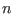
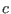

The built-in parts of the Ur/Web standard library are described by the signature in lib/basis.urs in the distribution. A module
 ascribing to that signature is available in the initial environment, and every program is implicitly prefixed by
ascribing to that signature is available in the initial environment, and every program is implicitly prefixed by
 .
.
Additionally, other common functions that are definable within Ur are included in lib/top.urs and lib/top.ur. This
 module is also opened implicitly.
module is also opened implicitly.
The idea behind Ur is to serve as the ideal host for embedded domain-specific languages. For now, however, the ``generic'' functionality is intermixed with Ur/Web-specific functionality, including in these two library modules. We hope that these generic library components have types that speak for themselves. The next section introduces the Ur/Web-specific elements. Here, we only give the type declarations from the beginning of
 .
.
The only unusual element of this list is the type, which stands for binary sequences. Simple blobs can be created from strings via . Blobs will also be generated from HTTP file uploads.
Ur also supports polymorphic variants, a dual to extensible records that has been popularized by OCaml. A type
represents an 
-ary sum type, with one constructor for each field of record
. Each constructor 
takes an argument of type
; the type  can be used to ``simulate'' a nullary constructor. The make function builds a variant value, while match implements pattern-matching, with match cases represented as records of functions.
can be used to ``simulate'' a nullary constructor. The make function builds a variant value, while match implements pattern-matching, with match cases represented as records of functions.
Another important generic Ur element comes at the beginning of top.urs.
For a type-level record
, a
encodes a permutation of
's elements. The
 function can be called on a
to iterate over the elements of
in that order.
function can be called on a
to iterate over the elements of
in that order.
 is parameterized on a type-level function to be used to calculate the type of each intermediate result of folding. After processing a subset
of
's entries, the type of the accumulator should be
. The next two expression arguments to
is parameterized on a type-level function to be used to calculate the type of each intermediate result of folding. After processing a subset
of
's entries, the type of the accumulator should be
. The next two expression arguments to
 are the usual step function and initial accumulator, familiar from fold functions over lists. The final two arguments are the record to fold over and a
for it.
are the usual step function and initial accumulator, familiar from fold functions over lists. The final two arguments are the record to fold over and a
for it.
The Ur compiler treats like a constructor class, using built-in rules to infer s for records with known structure. The order in which field names are mentioned in source code is used as a hint about the permutation that the programmer would like.